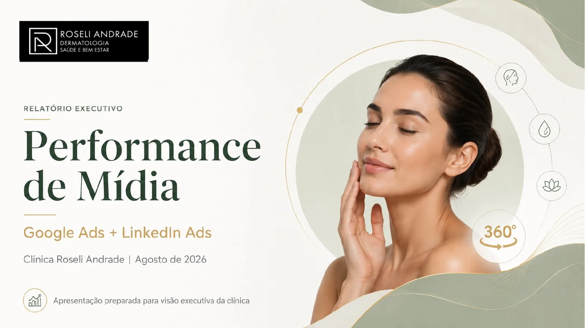
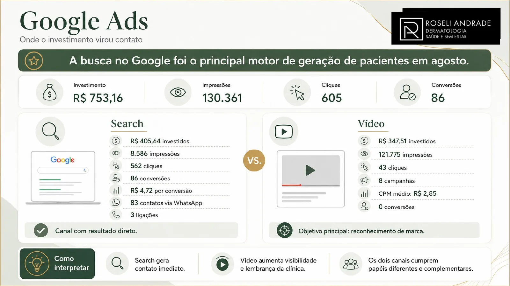
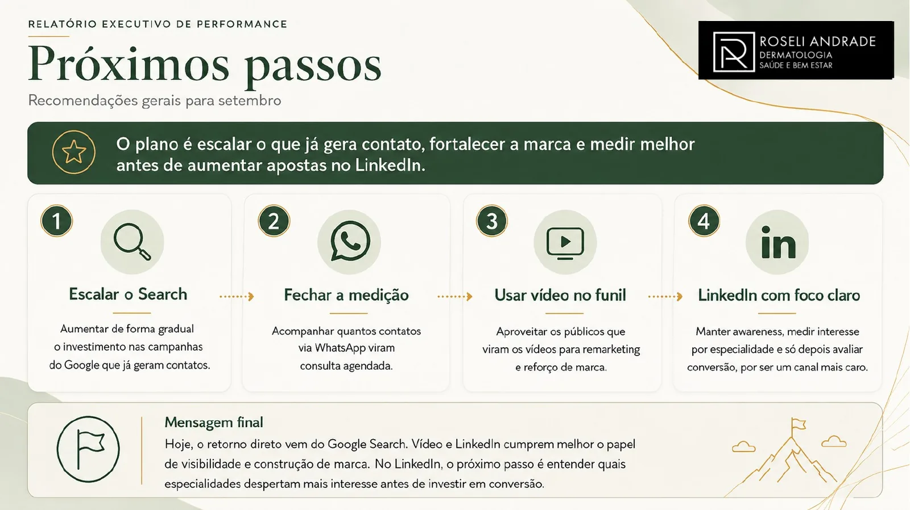
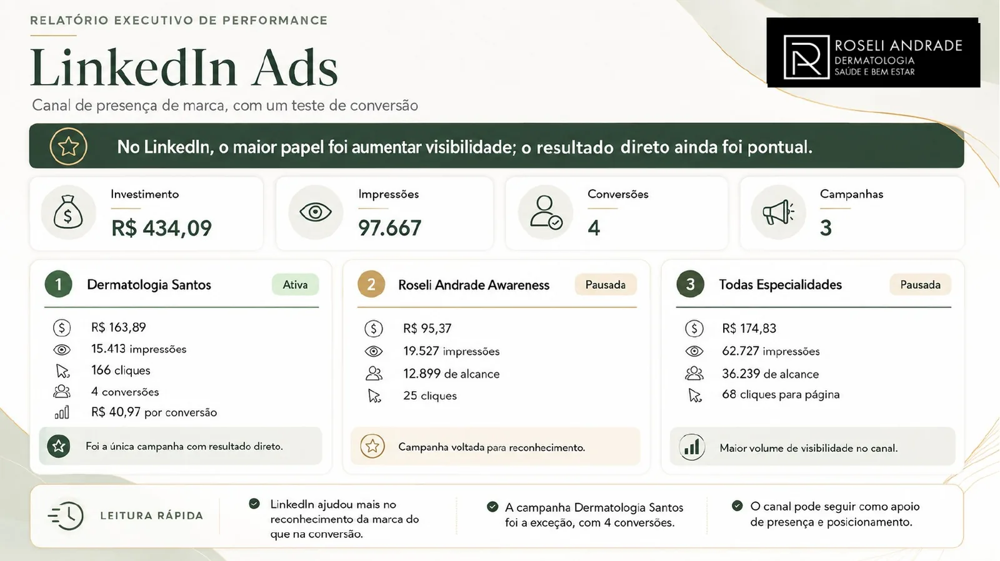
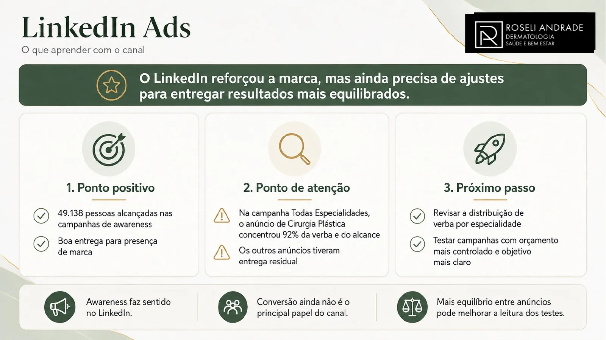

Da plataforma para a decisão.
Google e LinkedIn tinham papéis diferentes. O trabalho foi organizar aquisição, visibilidade e próximos passos em uma leitura executiva simples, sem forçar a mesma métrica para todos os canais.
Dois canais, duas funções, uma história para a gestão.
Search concentrava intenção e contato. Vídeo ajudava a construir familiaridade. LinkedIn reforçava presença e oferecia sinais de interesse por especialidade. O relatório precisava traduzir isso em decisões para o mês seguinte.

O Google trouxe os contatos. LinkedIn reforçou a visibilidade.
Em agosto, o Google registrou R$753,16 de investimento, 130.361 impressões e 86 conversões. O LinkedIn investiu R$434,09, gerou 97.667 impressões e 4 conversões. A leitura central foi separar geração direta de contato de construção de presença.

Search como principal motor de geração de pacientes.
O relatório separou Search e vídeo: Search concentrava o investimento e a conversão; vídeo funcionava como camada de awareness. O custo por conversão saudável do Search foi tratado como base para crescer com disciplina.


Awareness fazia sentido; conversão ainda precisava de equilíbrio.
O canal teve investimento menor e papel principalmente de visibilidade. A leitura por campanha mostrou onde havia sinal e onde o orçamento estava pulverizado, levando à recomendação de concentrar testes antes de aumentar verba.


Dados convertidos em prioridade.
O entregável final organizou o que manter, o que escalar, onde medir melhor e qual papel cada canal deveria cumprir. O valor não estava em reproduzir o Ads Manager, mas em transformar sinais de mídia em uma pauta de decisão.
Relatório executivo de agosto/2026 consolidado a partir dos dados de Google Ads e LinkedIn Ads.